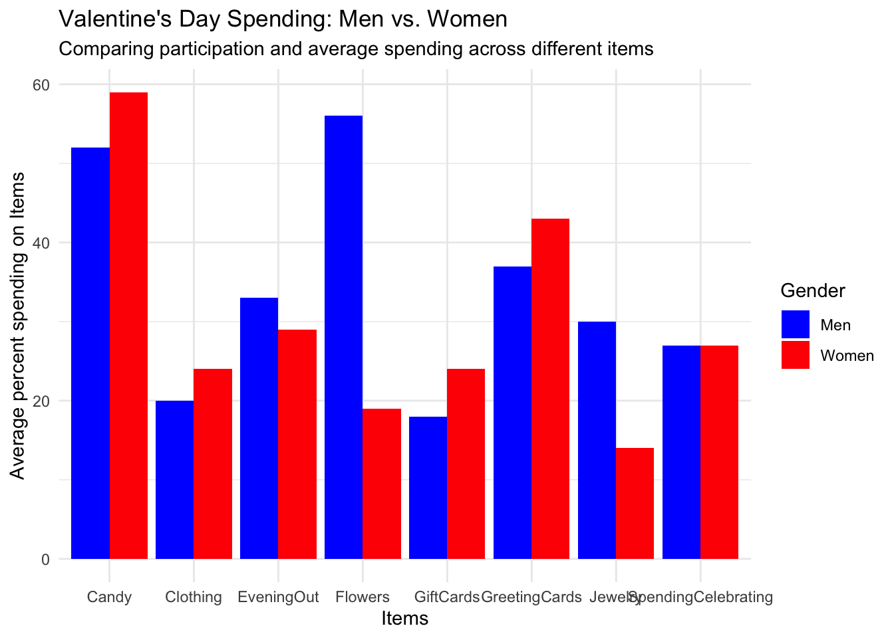
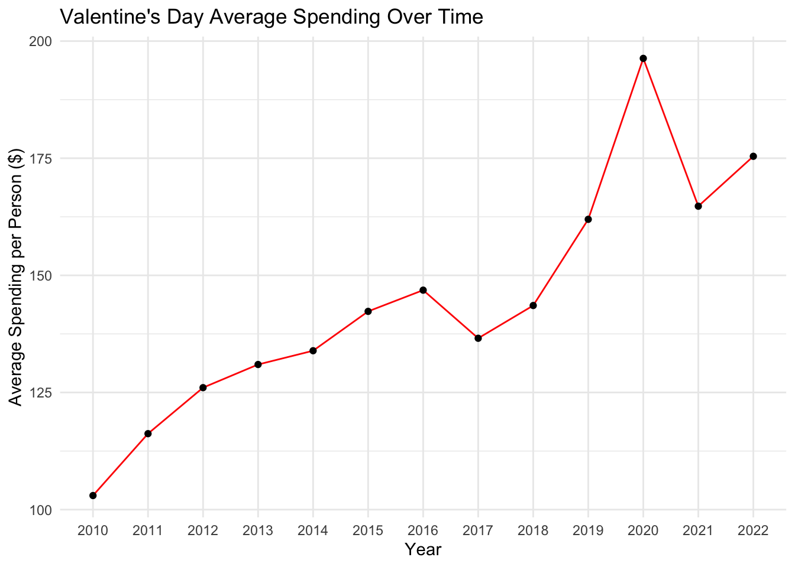
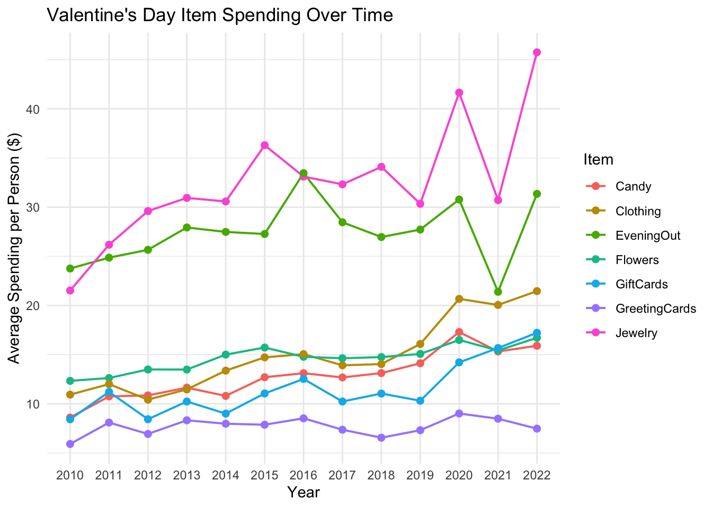
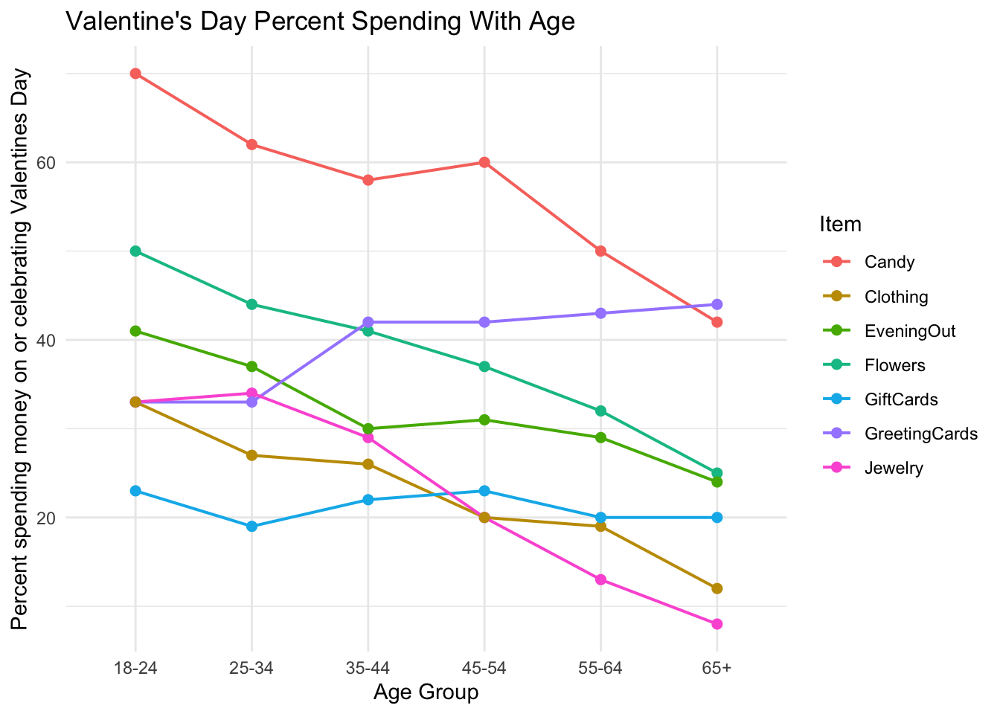

library(tidyverse)
tuesdata <- tidytuesdayR::tt_load(2024, week = 7)
historical_spending <- tuesdata$historical_spending
gifts_age <- tuesdata$gifts_age
gifts_gender <- tuesdata$gifts_genderIntroduction
- In light of the recent day of love I will be looking into Valentine’s Day survey data. The National Retail Federation in the United States has created a Valentine’s Day Data Center with different surveys from consumers. The data is from 2010-2022 and has total spending, average spending, types of gifts bought and spending per type of gift. From this dataset we can get a better look into spending trends across, time, age and gender during Valentines day.
Question 1
- How does spending differ from item to item between male and female consumers?
gifts_gender_diff <- gifts_gender |> pivot_longer(cols = -Gender, names_to = "Category", values_to = "Value")
ggplot(gifts_gender_diff, aes(x = Category, y = Value, fill = Gender)) +
geom_col(position = "dodge") + scale_fill_manual(values = c("Men" = "blue", "Women" = "red")) +
theme(axis.text.x = element_text(angle = 45, hjust = 1)) +
labs(title = "Valentine's Day Spending: Men vs. Women",
subtitle = "Comparing participation and average spending across different items",
y = "Average percent spending on Items",
x = "Items") + theme_minimal()
- The bar chart shows different spending percentages across different items on Valentines day. It is fair to see that both genders have the same “SpendingCelebrating” percentage (Percent spending money on or celebrating Valentine’s Day). It makes sense that males have a much higher percent spending on flowers than women. It’s interesting to see just how much spending is on candy, which is more than 50%.
Question 2
- What is the trend of average amount each person is spending over time?
ggplot(data = historical_spending,
aes(x = as.factor(Year), y = PerPerson, group = 1)) +
geom_line(colour = "red") + geom_point() + labs(
title = "Valentine's Day Average Spending Over Time",
y = "Average Spending per Person ($)",
x = "Year") + theme_minimal()
- It is interesting to see the growth in spending from 2010 to 2022, and speaks loudly on our consumerism within the US. Average spending as increased from around $100 in 2010 to nearly 200 in 2020 (it is important to note that this large increase is also a mix of lack of inflation adjustment). It is also cool to see the large decrease in 2021 (During the Covid Pandemic) when we everyone was quarantined and the world slowed down a little.
Question 3
- What are the trends of percent spending over time (2010-2022) within different items?
historical_spending_time <- historical_spending |>
pivot_longer(cols =
c(Candy,
Flowers,
Jewelry,
GreetingCards,
EveningOut,
Clothing,
GiftCards),
names_to = "Item",
values_to = "Spending") |>
mutate(Year = as.factor(Year))ggplot(historical_spending_time, aes(x = Year, y = Spending, color = Item, group = Item)) +
geom_line(linewidth = .7) +
geom_point(size = 2) + labs(
title = "Valentine's Day Item Spending Over Time",
y = "Average Spending per Person ($)",
x = "Year",
color = "Item") + theme_minimal()
Here we can see the trends of amount spending over time for each item. You can see that majority of the items tend to have an upward slope which makes sense as the average amount each person is spending increases over the years (see graph 2). It is interesting to look at the dips for both jewelry and evening out in the year 2021. This makes sense as there was global demand for jewelry drop in 2020-2021 during the covid pandemic. Additionally, during the covid pandemic the nation wide quarantine hindered people going out which explains why average amount spending on an evening out decreased so significantly.
Question 4
What is the trends of percent spending money within in different ages across different items?
spending_table <- gifts_age |> select(Age, SpendingCelebrating)
print(spending_table)# A tibble: 6 × 2
Age SpendingCelebrating
<chr> <dbl>
1 18-24 51
2 25-34 40
3 35-44 31
4 45-54 19
5 55-64 18
6 65+ 13gifts_age_1 <- gifts_age |>
pivot_longer(cols =
c(Candy, Flowers, Jewelry, GreetingCards, EveningOut, Clothing, GiftCards),
names_to = "Item",
values_to = "Spending"
)
ggplot(gifts_age_1, aes(x = Age, y = Spending, color = Item, group = Item)) +
geom_line(linewidth = .7) +
geom_point(size = 2) + labs(
title = "Valentine's Day Percent Spending With Age",
y = "Percent spending money on or celebrating Valentines Day",
x = "Age Group",
color = "Item") + theme_minimal()
Here we see a general decline in Valentine’s Day spending percentage as age increases. It is important to look at the trend of the greeting cards (purple line), which increases as age increases. This makes sense as, rather than candy and clothing, which are often popular gifts for younger individuals, greeting cards are often more popular as people and relationships mature.
Conclusion & Connection To Class
- While the following graphs give insight and provide an overview of spending on Valentine’s Day, it is important to note some flaws within the data itself. Looking at the graph with Average Spending Per Person, we see an immense increase in spending per person over the course of 2010-2022. This large increase is probably due to the lack of inflation adjustment from the National Retail Federation. The increase is most likely a mix of both more spending and a decreasing purchasing power of the dollar. Another flaw is in the historical surveys, where gender was collected as only ‘Men’ and ‘Women’, which does not accurately include all genders. If I had additional time, I would try to look for regional datasets to see if geographic culture influences these trends. I would also look for median spending data rather than just averages, to adjust for expensive items such as jewelry that skew the mean.
I was able used numerous functions and ideas from class in order to effectively convey trends throughout my graphs. By using pivot_longer() I was able to restructure the data in a way to better map it. I used the bar chart by groups so the audience can understand the differences at first glance. In addition, I was able use geom_line() to display trends via slopes, allowing the viewer to perceive the trends more effectively.
No matching items